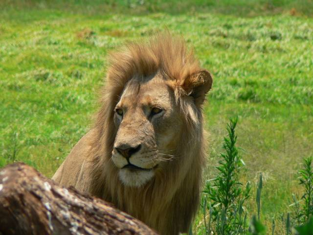

Лев - царь природы.
Лев - большая хищная кошка, занесённая в Красную книгу.
Ареал обитания львов
Континент
Место обитания
Численность
Африка.
Саванна.
16,5—47 тысяч особей (2002—2004 гг).
Индия.
Гирский лес.
359 особей (2006 г).
О львах в Интернете
Википедия
Youtube
Вокруг света